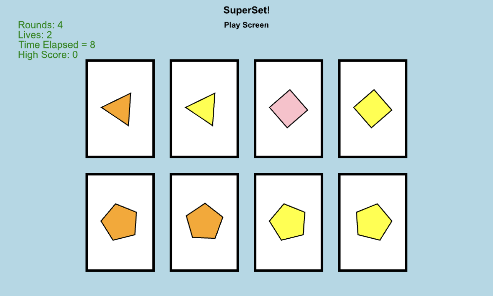
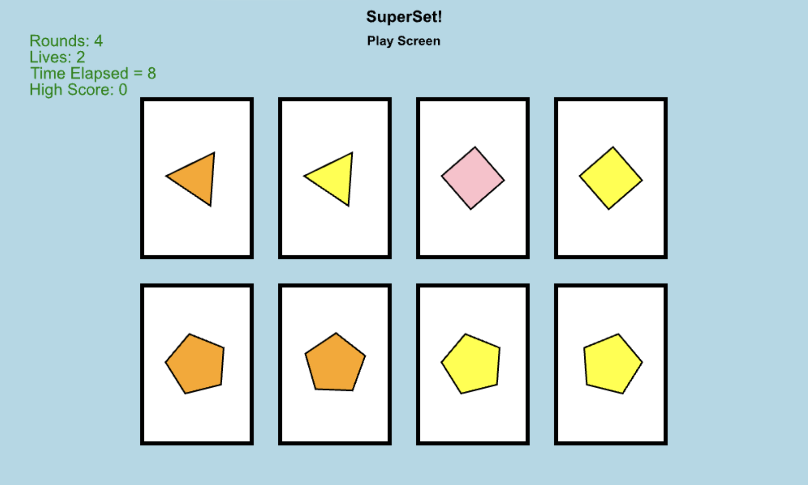

Superset
My midterm project for CMU's 15-112 course
Overview
Superset is a visual logic game inspired by the classic card game Set, developed as part of Carnegie Mellon's 15-112 programming course. The game challenges players to identify sets of three cards based on shared or distinct visual features. Each card must contain a set of attributes- I chose emoji type, background image, emoji size, and rotation speed. A valid set is formed when, for each attribute, the values are either all the same or all different.
I designed and implemented SuperSet in Python using the CMU Graphics library, creating multiple interactive screens including a start menu, separate theme and dimension selectors, and a gameplay interface. I developed an ocean theme system with custom assets, like aquatic animal emojis, backgrounds, music and sound effects. I also implemented logic to detect valid sets, provide hints with time penalties, and handled dynamic card rendering and user interaction. This project deepened my experience with object-oriented programming, image manipulation, and UI design within a game development context.
View Live Project →Tools Used
- Python
- CMU Graphics Package
Images
 
